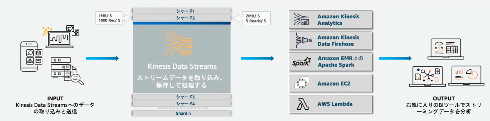
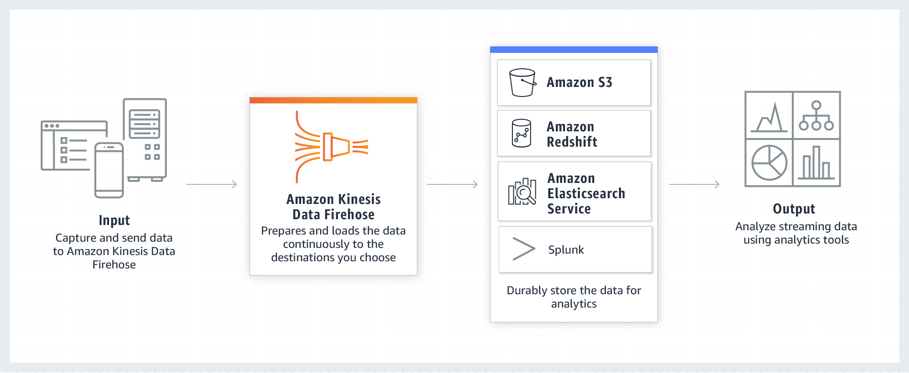
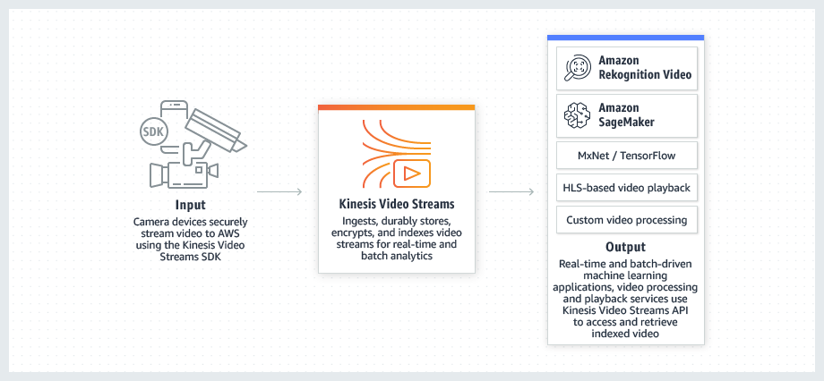

14. Kinesis¶
ストリーミングデータの配信機能を提供するマネージドサービス
サーバーがAWS管理のため、ユーザーはストリームデータの処理に集中することができる。
そもそもストリーミングデータとは、データの連続的な変化によって意味を持つデータのことであり、 これらのデータは抽出（Extracet）変換(Transform)書き出し（Load）ETL処理をされて保管される。
Kinesisは、ストリーミングデータを扱うために４つのサービスが提供されている
Kinesis Data Streams:各種AWSサービスにストリームデータをリアルタイムに配信
Kinesis Data Firehose:ストリームデータを準リアルタイムでデータレイクや分析ツールに蓄積する
Kinesis Data Analytics:Streams/Firehoseに配信されたデータをリアルタイムで分析変換
Kinesis Video Streams:動画をストリームデータとしてAWSに取り込み、各種サービスに配信
14.1. Kinesis Data Streams¶
異なるシステムやサーバー、デバイスから送信されるストリームデータを受信して、各種AWSサービスにリアルタイムに配信するサービス。
AWSのリソースに配信されるが、Consumer側で作り込みが必要になる点に注意。

14.1.1. Data Streamsの登場人物¶
Producer
Consumer
ストリーム: kafkaだとTopicに対応、データのグループ
シャード: kafkaだとPartitionに対応、ストリームの分割単位
14.1.2. Data Streamの暗号化¶
HTTPSエンドポイントが準備されており、 HTTPSによるデータ通信でデータを暗号化することができる
KMSを利用することでサーバーサイド暗号化を行うことが可能
14.1.3. 保存期間¶
デフォルトでは24時間の保存期間が設定されており、最大で168時間まで設定可能。
14.1.4. トラブルシューティング¶
14.1.4.1. ProvisionedThroughputExceededException¶
現在のパフォーマンスでは要求された量のデータが処理できていないことが原因のエラー
kinesisシャードの読み取り性能は
1秒あたり5件
1秒あたり2MB
GetRecords処理では、レコードのバッチを取得できて、最大10MBまで取得可能で、これを超えると、ProvisionedThrouphputExceededExeptionエラーが発生する。
対策として、以下が挙げられる
エクスポ年シャルバックオフアルゴリズムによる、再試行の感覚を長くする対策
GetRecord処理をする際にバッチ処理を高速分散化する対策
14.2. Kinesis Data Firehose¶
S3、Redshift、OenSeearchなどのストレージサービスやDBにストリームデータをロードさせるサービス。 Redshiftに保存するためには一度S3に格納する必要がある点に注意
Kinesis Data FirehoseはLambdaと統合されており、受信したデータに変換をしてから、配信することが可能。
Data Streamsと比較して、Consumer側での作り込みが不要であるが、60secほどのラグがあるため、準リアルタイムな機能となる。

14.3. Kinesis Data Analytics¶
Kinesis Data streamsとKinesis Data Firehoseに格納されたストリームデータに対して分析が可能なサービス
SQLなどを利用して、データ分析を行い、Lambdaと統合されているためデータ形式の変換を行なうことも可能。
Kinesis Data Analyticsで分析した後は、Firehoseで分析結果を蓄積したり、Streamsへ流してよりリッチな分析を行うことが可能。 処理の内容自体は、Streamsでも可能だが、Consumer側の作り込みをせずに分析をすることができる点が大きなメリット。

14.4. kinesis Video Streams¶
ビデオカメラなどのデバイスから送られてくる動画データをストリームデータとしてAWSに取り込み、ストリーミング（データ転送）するサービス。
データ分析を行う際には、Kinesis Video Streams Parser Streams Libraryを利用した動画解析や機械学習サービスであるAmazon Rekognition VideoやSage Makerとの連携が可能。
データ分析を行うほか、WebRTCを使用して、レイテンシーを短くすることで、オンライン会議のような双方向での配信も可能である。
